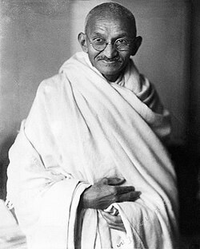

1. Promoted non-violence(Ahimsa).
2. Developed and used Satyagraha as a method of resistance.
3. Led the Champaran Satyagraha in 1917.
4. Led the Non-Corporation Movement in 1920.
5. Led the Dandi March in 1930.
6. Played a major role in the Quit India Movement in 1942.